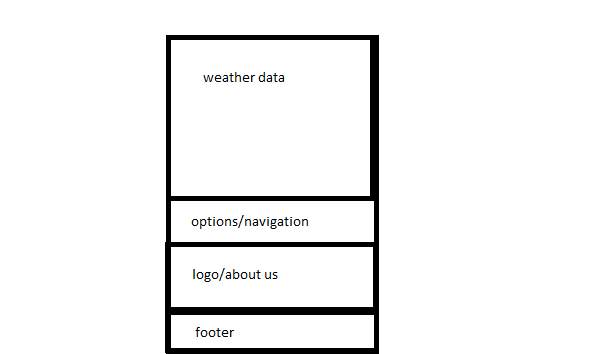

Site Purpose
The main goal of this site is to effectively deliver information to the user.
Audience
Who is using this site?
- a person who likes to plan
- a person who does not want to be surprised by the environment
- educational levels vary
- social statuses vary
- age, gender, etc vary
What is the user doing when they visit the site?
- looking for information as fats as possible
- checking the weather
- planningg fot a trip or outdoor activity
What actions or content is the visitor wanting?
- The people visiting want simple weather information
Where is the visitor located?
- probably in one of the three cities mentioned
- worldwide, but most likely the US
When is the site being visited?
- weeks or days in advance prior to a trip or outdoor activity
- daily
- varies
How are users acessing the site?
- desktop
- mobile phone
- tablet or other medium sized electronic
Persona - Superbusy Young Person
Fictional Name:
Kaitly SmithResponsibilities:
manger at StarbucksDemographics:
- 25
- married
- no children
- bachelor's degree, currently pursuing a masters in fine arts
Goals and Tasks:
- Manage finances and inventory
- Seeks beauty in the world
- Secretly wants world domination
- She also wants to pay back all her student loans
Environment:
She constantly goes online to check her emails, and the weather. She does this when she’s alone in her office, that way she sets a good example for her employees. She’s usually never home.Quote:
“ I’m not a perfectionist, I just like to have order…"
Sketches - 1st one is desktop

Peer Feedback
Here is what Brittany Remington commented:
I like your grid-based layout; it flows. Your medium site layout is particularly unique. I never would have thought to place the weather data on the left and nav/footer content on the right. You think outside of the box, literally! (no one's ever told me that! :3)
Based on the feedback I received from Sister Kath on my own sketches, it sounds like she would like us to specify where we will be placing the data, such as temperature high/low, precipitation, wind, etc. She also said to be more specific about what goes into the header, navigation, and footer areas. So, I might suggest you expound on that portion of your sketch. For example, what goes in the "options" section?
Kathy Walker asked," How did you make your drawings?"
I replied, "paint"